{kind=link}
{kind=link}
{kind=link}
{kind=link}
{kind=link}
{kind=link}
{kind=link}
{kind=link}
{kind=link}
{kind=link}
{kind=link}
{kind=link}
{kind=link}
{kind=link}
{kind=link}
{kind=link}
{kind=link}
{kind=link}

N-EffN comparison, length comps, retained, 10_OR_NorthernOR_Rec_PC
file: comp_lenfit_sampsize_flt10mkt2.png
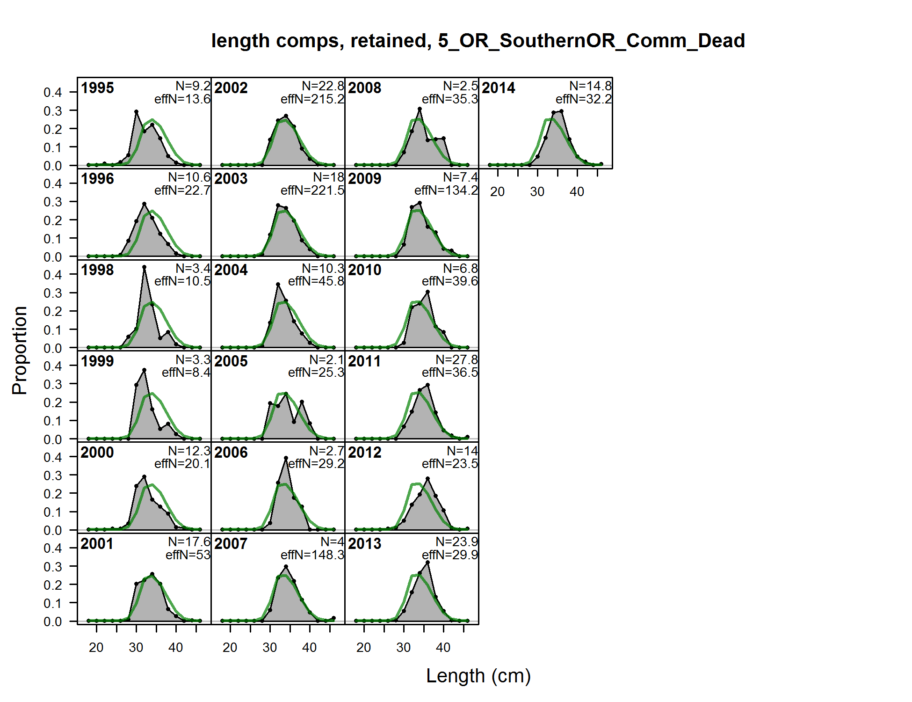
length comps, retained, 5_OR_SouthernOR_Comm_Dead
file: comp_lenfit_flt5mkt2.png
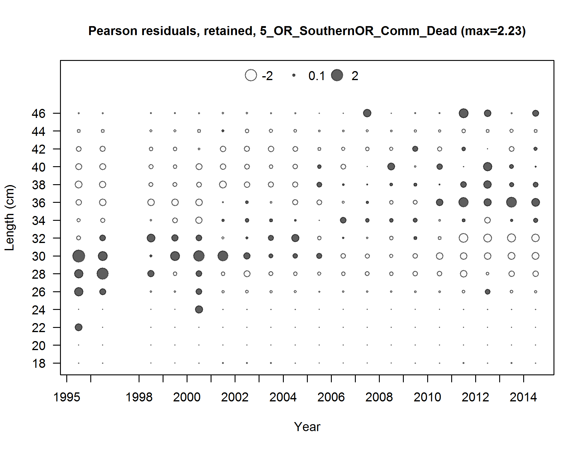
Pearson residuals, retained, 5_OR_SouthernOR_Comm_Dead (max=2.85)
Closed bubbles are positive residuals (observed > expected) and open bubbles are negative residuals (observed < expected).
file: comp_lenfit_residsflt5mkt2.png
N-EffN comparison, length comps, retained, 5_OR_SouthernOR_Comm_Dead
file: comp_lenfit_sampsize_flt5mkt2.png
Francis data weighting method TA1.8 5_OR_SouthernOR_Comm_Dead
Suggested sample size adjustment (with 95% interval) for len data from 5_OR_SouthernOR_Comm_Dead:
0.9582 (0.7061-1.7198)
file: comp_lenfit_data_weighting_TA1.8_5_OR_SouthernOR_Comm_Dead.png
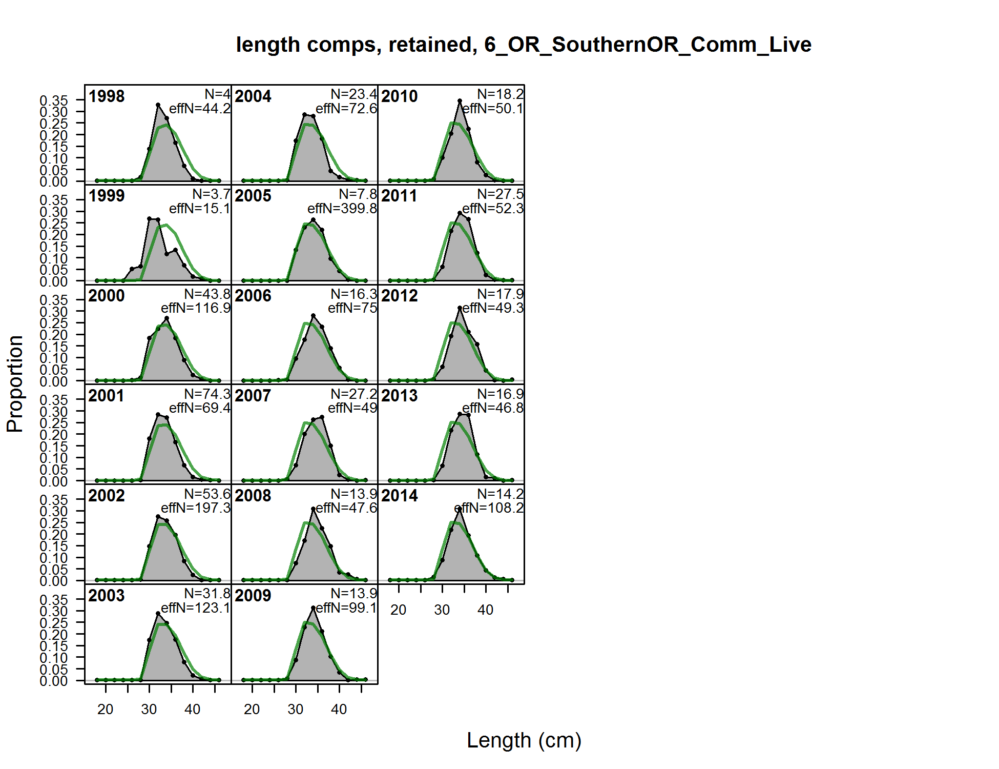
length comps, retained, 6_OR_SouthernOR_Comm_Live
file: comp_lenfit_flt6mkt2.png
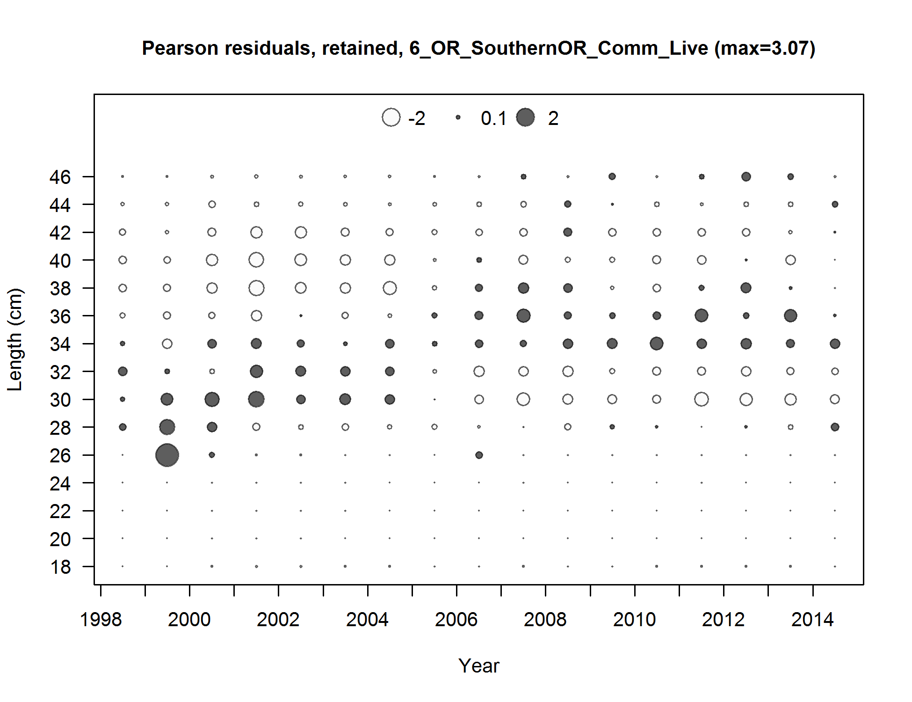
Pearson residuals, retained, 6_OR_SouthernOR_Comm_Live (max=2.54)
Closed bubbles are positive residuals (observed > expected) and open bubbles are negative residuals (observed < expected).
file: comp_lenfit_residsflt6mkt2.png
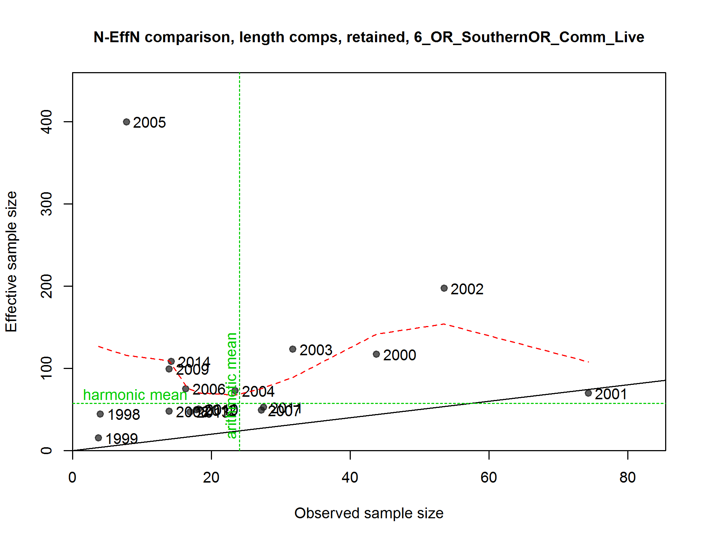
N-EffN comparison, length comps, retained, 6_OR_SouthernOR_Comm_Live
file: comp_lenfit_sampsize_flt6mkt2.png
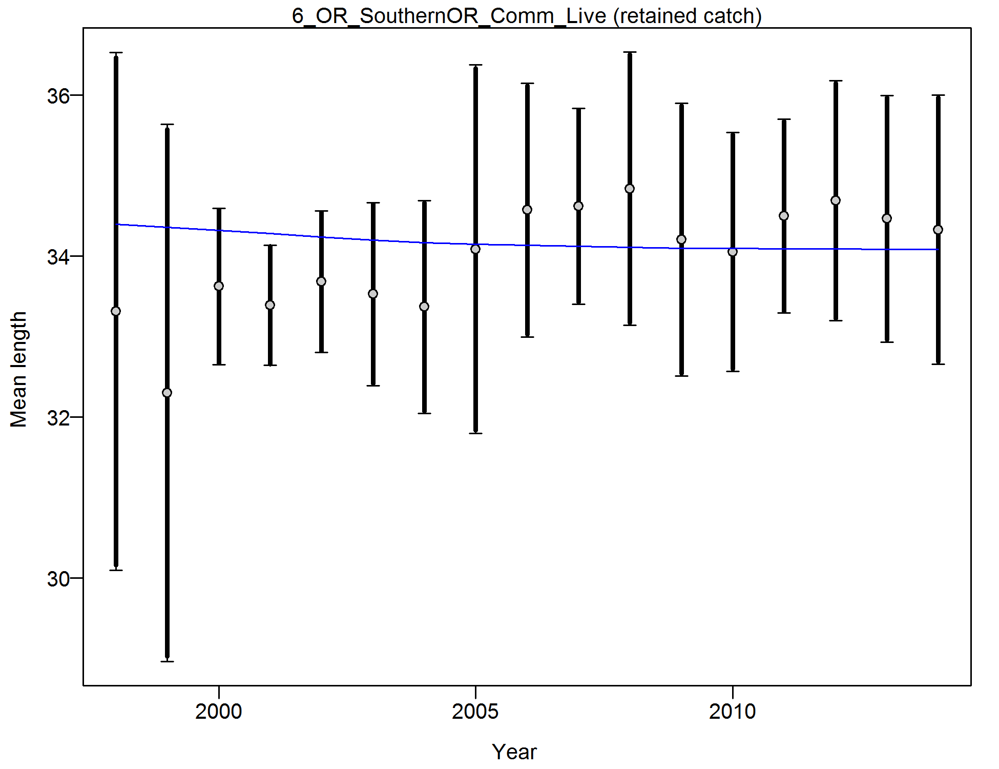
Francis data weighting method TA1.8 6_OR_SouthernOR_Comm_Live
Suggested sample size adjustment (with 95% interval) for len data from 6_OR_SouthernOR_Comm_Live:
0.9813 (0.612-2.4851)
file: comp_lenfit_data_weighting_TA1.8_6_OR_SouthernOR_Comm_Live.png
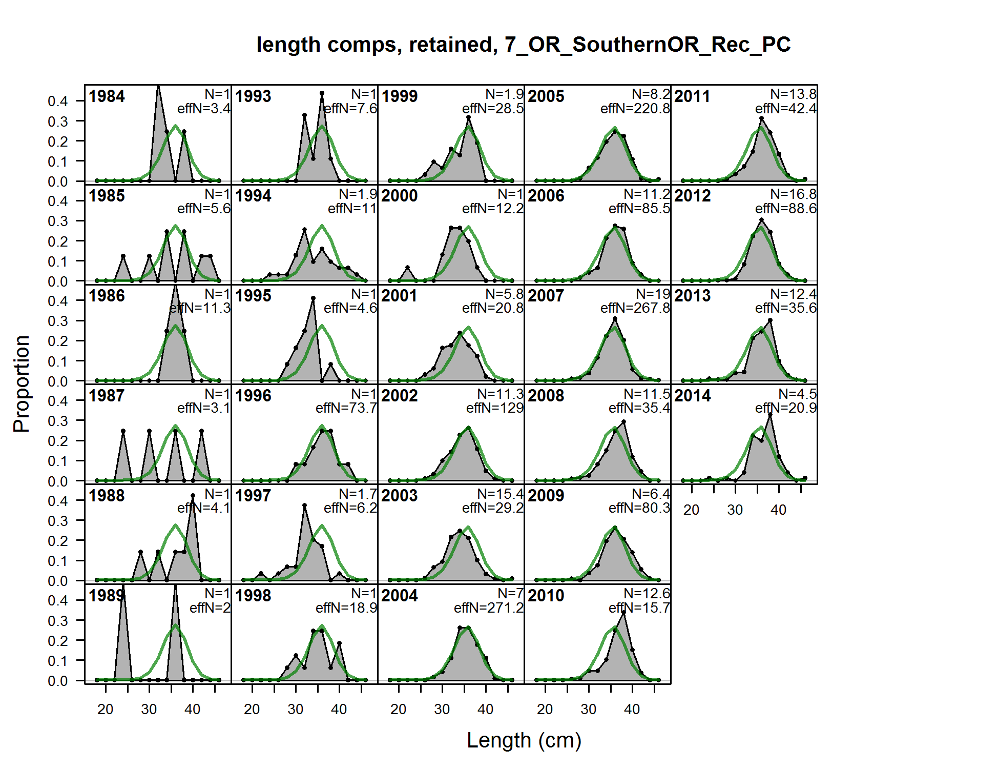
length comps, retained, 7_OR_SouthernOR_Rec_PC
file: comp_lenfit_flt7mkt2.png
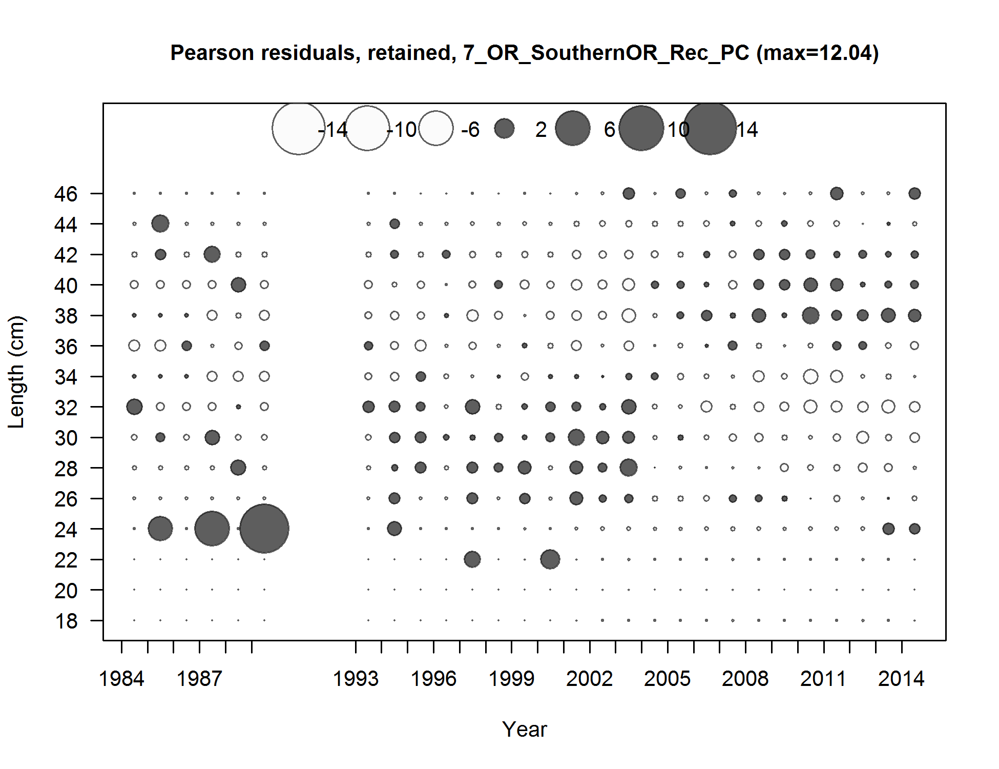
Pearson residuals, retained, 7_OR_SouthernOR_Rec_PC (max=15.27)
Closed bubbles are positive residuals (observed > expected) and open bubbles are negative residuals (observed < expected).
file: comp_lenfit_residsflt7mkt2.png
N-EffN comparison, length comps, retained, 7_OR_SouthernOR_Rec_PC
file: comp_lenfit_sampsize_flt7mkt2.png
Francis data weighting method TA1.8 7_OR_SouthernOR_Rec_PC
Suggested sample size adjustment (with 95% interval) for len data from 7_OR_SouthernOR_Rec_PC:
0.9593 (0.7187-1.527)
file: comp_lenfit_data_weighting_TA1.8_7_OR_SouthernOR_Rec_PC.png
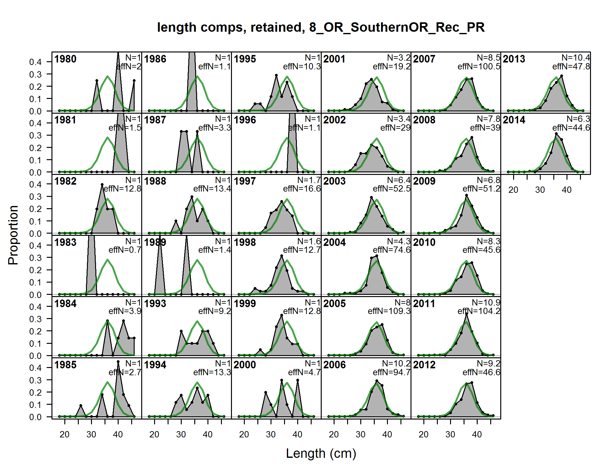
length comps, retained, 8_OR_SouthernOR_Rec_PR
file: comp_lenfit_flt8mkt2.png
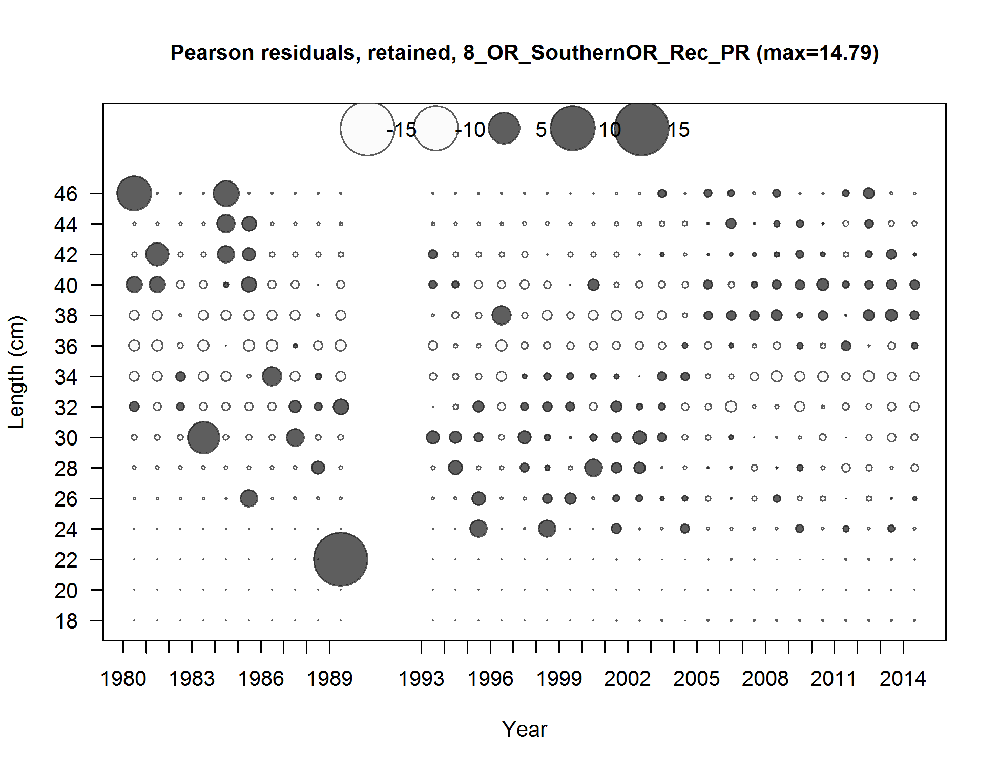
Pearson residuals, retained, 8_OR_SouthernOR_Rec_PR (max=15.47)
Closed bubbles are positive residuals (observed > expected) and open bubbles are negative residuals (observed < expected).
file: comp_lenfit_residsflt8mkt2.png
N-EffN comparison, length comps, retained, 8_OR_SouthernOR_Rec_PR
file: comp_lenfit_sampsize_flt8mkt2.png
Francis data weighting method TA1.8 8_OR_SouthernOR_Rec_PR
Suggested sample size adjustment (with 95% interval) for len data from 8_OR_SouthernOR_Rec_PR:
0.8318 (0.5586-1.3925)
file: comp_lenfit_data_weighting_TA1.8_8_OR_SouthernOR_Rec_PR.png
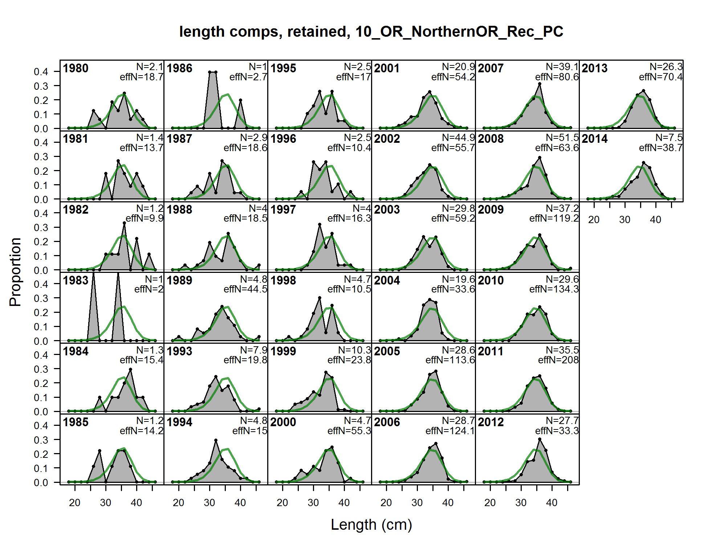
length comps, retained, 10_OR_NorthernOR_Rec_PC
file: comp_lenfit_flt10mkt2.png
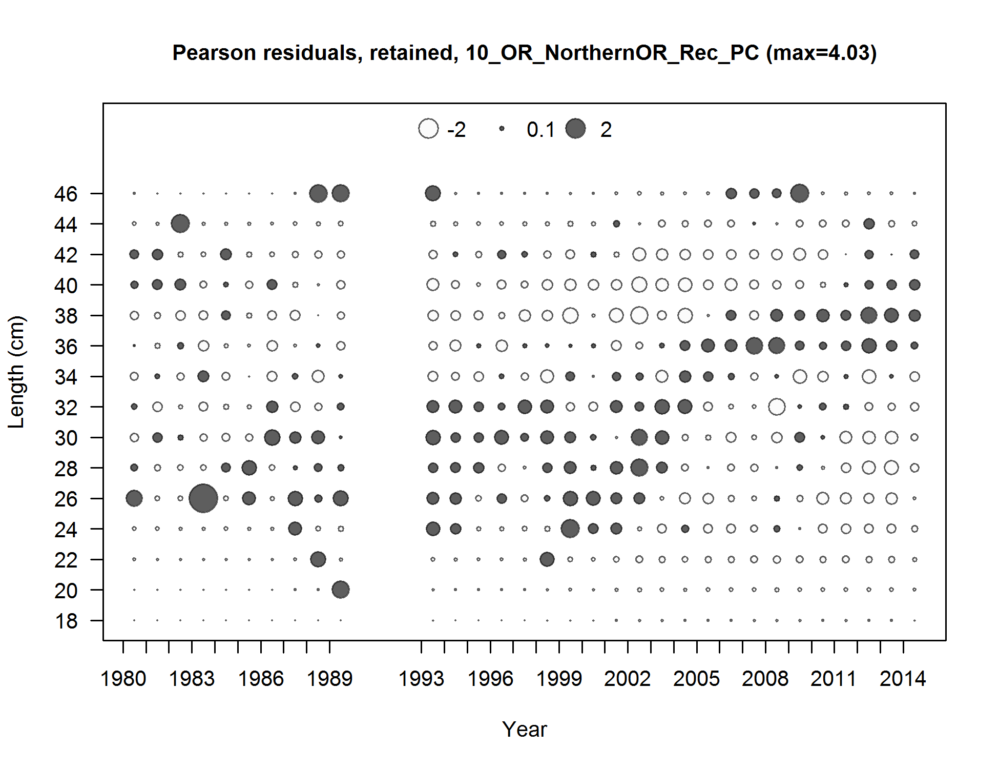
Pearson residuals, retained, 10_OR_NorthernOR_Rec_PC (max=3.88)
Closed bubbles are positive residuals (observed > expected) and open bubbles are negative residuals (observed < expected).
file: comp_lenfit_residsflt10mkt2.png
N-EffN comparison, length comps, retained, 10_OR_NorthernOR_Rec_PC
file: comp_lenfit_sampsize_flt10mkt2.png
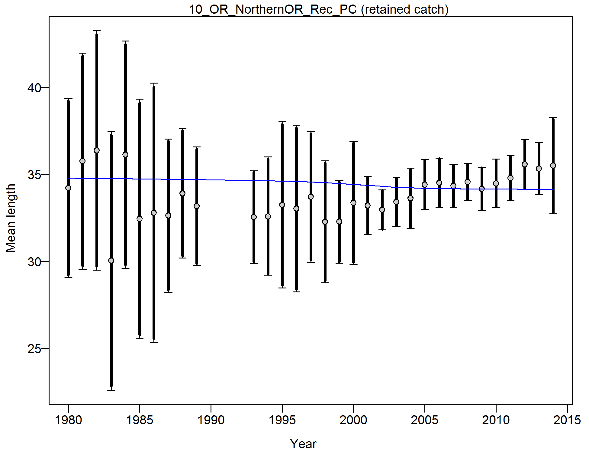
Francis data weighting method TA1.8 10_OR_NorthernOR_Rec_PC
Suggested sample size adjustment (with 95% interval) for len data from 10_OR_NorthernOR_Rec_PC:
0.9563 (0.6811-1.6411)
file: comp_lenfit_data_weighting_TA1.8_10_OR_NorthernOR_Rec_PC.png
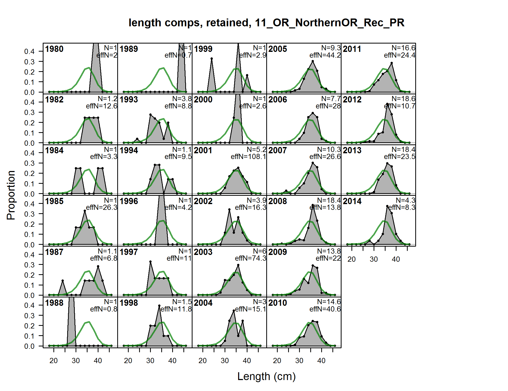
length comps, retained, 11_OR_NorthernOR_Rec_PR
file: comp_lenfit_flt11mkt2.png
Pearson residuals, retained, 11_OR_NorthernOR_Rec_PR (max=11.56)
Closed bubbles are positive residuals (observed > expected) and open bubbles are negative residuals (observed < expected).
file: comp_lenfit_residsflt11mkt2.png
N-EffN comparison, length comps, retained, 11_OR_NorthernOR_Rec_PR
file: comp_lenfit_sampsize_flt11mkt2.png
Francis data weighting method TA1.8 11_OR_NorthernOR_Rec_PR
Suggested sample size adjustment (with 95% interval) for len data from 11_OR_NorthernOR_Rec_PR:
0.9376 (0.6497-1.6516)
file: comp_lenfit_data_weighting_TA1.8_11_OR_NorthernOR_Rec_PR.png
length comps, retained, aggregated across time by fleet
file: comp_lenfit_mkt2_aggregated_across_time.png

Note: this plot doesn't seem to be working right for some models.
Pearson residuals, sexes combined, retained, comparing across fleets
Closed bubbles are positive residuals (observed > expected) and open bubbles are negative residuals (observed < expected).
file: comp_lenfit_sex1mkt2_multi-fleet_comparison.png
{kind=link}
{kind=link}
{kind=link}
{kind=link}
{kind=link}
{kind=link}